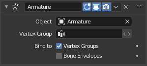

骨架修改器¶
骨架 修改器用于构建骨架系统，用于动画角色姿势和其他任何需要提出的姿势。
通过向物体添加骨架，可以精确地变形此物体，从而无需手动设置几何体。
See also
有关骨架使用的更多详细信息， 查看 armature section.
选项¶

骨架修改器。¶
- 对象
此修改器使用的骨架物体的名称。
- 顶点组
物体的顶点组的名称，其权重将用于确定此骨架修改器与其他 骨骼 结果混合时的影响。
只有在同一物体上至少有两个修改器且激活了 多重编辑 时才有意义。
- 反转
<-> 反转之前定义的顶点组的效果(即反转该组的权重值)。
- 反转
- Bind to
- 顶点组
When enabled, bones of a given name will deform points which belong to vertex groups of the same name. E.g. a bone named "forearm", will only affect the points in the "forearm" vertex group.
一个骨骼对给定点的影响由相关组中该点的权重控制。 比 骨骼封装 更精确的方法，但通常设置时间也更长。
- 骨骼封装
启用后，骨骼将使其附近的点或控制点变形，由每个骨骼的封套半径和距离定义。 启用/禁用骨骼 envelopes 定义变形 (即骨骼在其附近使点变形)。